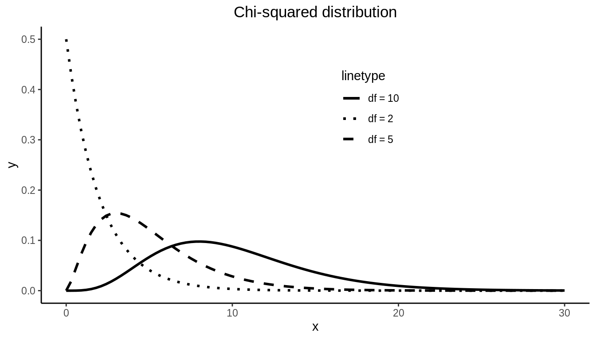

Chapter 9 Sampling Distributions
In Chapter 8 we introduced inferential statistics by discussing several ways to take a random sample from a population and that estimates calculated from random samples can be used to make inferences regarding parameter values in populations. In this chapter we focus on how these inferences can be made using the theory of repeated sampling.
Needed packages
Let’s load all the packages needed for this chapter (this assumes you’ve already installed them). If needed, read Section 1.3 for information on how to install and load R packages.
9.1 Theory of Repeated Samples
Imagine that you want to know the average age of individuals at a football game, so you take a random sample of \(n=100\) people. In this sample, you find the average age is \(\bar{x} = 28.2\). This average age is an estimate of the population average age \(\mu\).
Does this mean that the population mean is \(\mu = 28.2\)? The sample was selected randomly, so inferences are straightforward, right?
It’s not this simple! Statisticians approach this problem by focusing not on the sample in hand, but instead on possible other samples. We will call this counter-factual thinking. This means that in order to understand the relationship between a sample estimate we are able to compute in our data and the population parameter, we have to understand how results might differ if instead of our sample, we had another possible (equally likely) sample. That is,
- How would our estimate of the average age change if instead of these \(n = 100\) individuals we had randomly selected a different \(n = 100\) individuals?
While it is not possible to travel back in time for this particular question, we could instead generate a way to study this exact question by creating a simulation. We will discuss simulations further in Sections 9.2 and 9.3 and actually conduct one, but for now, let’s just do a thought experiment. Imagine that we create a hypothetical situation in which we know the outcome (e.g., age) for every individual or observation in a population. As a result, we know what the population parameter value is (e.g., \(\mu = 32.4\)). Then we would randomly select a sample of \(n = 100\) observations and calculate the sample mean (e.g. \(\bar{x} = 28.2\)). And then we could repeat this sampling process – each time selecting a different possible sample of \(n = 100\) – many, many, many times (e.g., \(10,000\) different samples of \(n = 100\)), each time calculating the sample mean. At the end of this process, we would then have many different estimates of the population mean, each equally likely.
We do this type of simulation in order to understand how close any one sample’s estimate is to the true population mean. For example, it may be that we are usually within \(\pm 2\) years? Or maybe \(\pm 5\) years? We can ask further questions, like: on average, is the sample mean the same as the population mean?
It is important to emphasize here that this process is theoretical. In real life, you do not know the values for all individuals or observations in a population. (If you did, why sample?) And in real life, you will not take repeated samples. Instead, you will have in front of you a single sample that you will need to use to make inferences to a population. What simulation exercises provide are properties that can help you understand how far off the sample estimate you have in hand might be for the population parameter you care about.
9.2 Sampling Activity
In the previous section, we provided an overview of repeated sampling and why the theoretical exercise is useful for understanding how to make inferences. This way of thinking, however, can be hard in the abstract.
9.2.1 What proportion of this bowl’s balls are red?
In this section, we provide a concrete example, based upon a classroom activity completed in an introductory statistics class with 33 students. In the class, there is a large bowl of balls that contains red and white balls. Importantly, we know that 37.5% of the balls are red (someone counted this!).

FIGURE 9.1: A bowl with red and white balls.
The goal of the activity is to understand what would happen if we didn’t actually count all of the red balls (a census), but instead estimated the proportion that are red based upon a smaller random sample (e.g., n = 50).
9.2.2 Taking one random sample
We begin by taking a random sample of n = 50 balls. To do so, we insert a shovel into the bowl, as seen in Figure 9.2.

FIGURE 9.2: Inserting a shovel into the bowl.
Using the shovel, we remove a number of balls as seen in Figure 9.3.

FIGURE 9.3: Fifty balls from the bowl.
Observe that 17 of the balls are red. There are a total of 5 x 10 = 50 balls, and thus 0.34 = 34% of the shovel’s balls are red. We can view the proportion of balls that are red in this shovel as a guess of the proportion of balls that are red in the entire bowl. While not as exact as doing an exhaustive count, our guess of 34% took much less time and energy to obtain.
9.2.3 Everyone takes a random sample (i.e., repeating this 33 times)
In our random sample, we estimated the proportion of red balls to be 34%. But what if we were to have gotten a different random sample? Would we remove exactly 17 red balls again? In other words, would our guess at the proportion of the bowl’s balls that are red be exactly 34% again? Maybe? What if we repeated this exercise several times? Would we obtain exactly 17 red balls each time? In other words, would our guess at the proportion of the bowl’s balls that are red be exactly 34% every time? Surely not.
To explore this, every student in the introductory statistics class repeated the same activity. Each person:
- Used the shovel to remove 50 balls,
- Counted the number of red balls,
- Used this number to compute the proportion of the 50 balls they removed that are red,
- Returned the balls into the bowl, and
- Mixed the contents of the bowl a little to not let a previous group’s results influence the next group’s set of results.


FIGURE 9.4: Repeating sampling activity 33 times.
However, before returning the balls into the bowl, they are going to mark the proportion of the 50 balls they removed that are red in a histogram as seen in Figure 9.5.

FIGURE 9.5: Constructing a histogram of proportions.
Recall from Section 2.5 that histograms allow us to visualize the distribution of a numerical variable: where the values center and in particular how they vary. The resulting hand-drawn histogram can be seen in Figure 9.6.

FIGURE 9.6: Hand-drawn histogram of 33 proportions.
Observe the following about the histogram in Figure 9.6:
- At the low end, one group removed 50 balls from the bowl with proportion between 0.20 = 20% and 0.25 = 25%
- At the high end, another group removed 50 balls from the bowl with proportion between 0.45 = 45% and 0.5 = 50% red.
- However the most frequently occurring proportions were between 0.30 = 30% and 0.35 = 35% red, right in the middle of the distribution.
- The shape of this distribution is somewhat bell-shaped.
Let’s construct this same hand-drawn histogram in R using your data visualization skills that you honed in Chapter 2. Each of the 33 student’s proportion red is saved in a data frame tactile_prop_red which is included in the moderndive package you loaded earlier.
Let’s display only the first 10 out of 33 rows of tactile_prop_red’s contents in Table 9.1.
| student | replicate | red_balls | prop_red |
|---|---|---|---|
| Ilyas | 1 | 21 | 0.42 |
| Morgan | 2 | 17 | 0.34 |
| Martin | 3 | 21 | 0.42 |
| Clark | 4 | 21 | 0.42 |
| Riddhi | 5 | 18 | 0.36 |
| Andrew | 6 | 19 | 0.38 |
| Julia | 7 | 19 | 0.38 |
| Rachel | 8 | 11 | 0.22 |
| Daniel | 9 | 15 | 0.30 |
| Josh | 10 | 17 | 0.34 |
Observe for each student we have their names, the number of red_balls they obtained, and the corresponding proportion out of 50 balls that were red named prop_red. Observe, we also have a variable replicate enumerating each of the 33 students; we chose this name because each row can be viewed as one instance of a replicated activity: using the shovel to remove 50 balls and computing the proportion of those balls that are red.
We visualize the distribution of these 33 proportions using a geom_histogram() with binwidth = 0.05 in Figure 9.7, which is appropriate since the variable prop_red is numerical. This computer-generated histogram matches our hand-drawn histogram from the earlier Figure 9.6.
ggplot(tactile_prop_red, aes(x = prop_red)) +
geom_histogram(binwidth = 0.05, boundary = 0.4, color = "white") +
labs(x = "Proportion of 50 balls that were red",
title = "Distribution of 33 proportions red") 
FIGURE 9.7: Distribution of 33 proportions based on 33 samples of size 50
9.2.4 What are we doing here?
We just worked through a thought experiment in which we imagined 33 different realities that could have occurred. In each, a different random sample of size 50 balls was selected and the proportion of balls that were red was calculated, providing an estimate of the true proportion of balls that are red in the entire bowl. We then compared these estimates to the true parameter value.
We found that there is variation in these estimates – what we call sampling variability – and that while the estimates are somewhat near to the population parameter, they are not typically equal to the population parameter value. That is, in some of these realities, the sample estimate was larger than the population value, while in others, the sample estimate was smaller.
But why did we do this? It may seem like a strange activity, since we already know the value of the population proportion. Why do we need to imagine these other realities? By understanding how close (or far) a sample estimate can be from a population parameter in a situation when we know the true value of the parameter, we are able to deduce properties of the estimator more generally, which we can use in real-life situations in which we do not know the value of the population parameter and have to estimate it.
Unfortunately, the thought exercise we just completed wasn’t very precise – certainly there are more than 33 possible alternative realities and samples that we could have drawn. Put another way, if we really want to understand properties of an estimator, we need to repeat this activity thousands of times. Doing this by hand – as illustrated in this section – would take forever. For this reason, in Section 9.3 we’ll extend the hands-on sampling activity we just performed by using a computer simulation.
Using a computer, not only will we be able to repeat the hands-on activity a very large number of times, but it will also allow us to use shovels with different numbers of slots than just 50. The purpose of these simulations is to develop an understanding of two key concepts relating to repeated sampling: understanding the concept of sampling variation and the role that sample size plays in this variation.
9.3 Computer simulation
In the previous Section 9.2, we began imagining other realities and the other possible samples we could have gotten other than our own. To do so, we read about an activity in which a physical bowl of balls and a physical shovel were used by 33 members of a statistics class. We began with this approach so that we could develop a firm understanding of the root ideas behind the theory of repeated sampling.
In this section, we’ll extend this activity to include 10,000 other realities and possible samples using a computer. We focus on 10,000 hypothetical samples since it is enough to get a strong understanding of the properties of an estimator, while remaining computationally simple to implement.
9.3.1 Using the virtual shovel once
Let’s start by performing the virtual analogue of the tactile sampling simulation we performed in 9.2. We first need a virtual analogue of the bowl seen in Figure 9.1. To this end, we included a data frame bowl in the moderndive package whose rows correspond exactly with the contents of the actual bowl.
# A tibble: 2,400 x 2
ball_ID color
<int> <chr>
1 1 white
2 2 white
3 3 white
4 4 red
5 5 white
6 6 white
7 7 red
8 8 white
9 9 red
10 10 white
# … with 2,390 more rowsObserve in the output that bowl has 2400 rows, telling us that the bowl contains 2400 equally-sized balls. The first variable ball_ID is used merely as an “identification variable” for this data frame; none of the balls in the actual bowl are marked with numbers. The second variable color indicates whether a particular virtual ball is red or white. View the contents of the bowl in RStudio’s data viewer and scroll through the contents to convince yourselves that bowl is indeed a virtual version of the actual bowl in Figure 9.1.
Now that we have a virtual analogue of our bowl, we now need a virtual analogue for the shovel seen in Figure 9.2; we’ll use this virtual shovel to generate our virtual random samples of 50 balls. We’re going to use the rep_sample_n() function included in the moderndive package. This function allows us to take repeated, or replicated, samples of size n. Run the following and explore virtual_shovel’s contents in the RStudio viewer.
Let’s display only the first 10 out of 50 rows of virtual_shovel’s contents in Table 9.2.
| replicate | ball_ID | color |
|---|---|---|
| 1 | 1970 | white |
| 1 | 842 | red |
| 1 | 2287 | white |
| 1 | 599 | white |
| 1 | 108 | white |
| 1 | 846 | red |
| 1 | 390 | red |
| 1 | 344 | white |
| 1 | 910 | white |
| 1 | 1485 | white |
The ball_ID variable identifies which of the balls from bowl are included in our sample of 50 balls and color denotes its color. However what does the replicate variable indicate? In virtual_shovel’s case, replicate is equal to 1 for all 50 rows. This is telling us that these 50 rows correspond to a first repeated/replicated use of the shovel, in our case our first sample. We’ll see below when we “virtually” take 10,000 samples, replicate will take values between 1 and 10,000. Before we do this, let’s compute the proportion of balls in our virtual sample of size 50 that are red using the dplyr data wrangling verbs you learned in Chapter 3. Let’s breakdown the steps individually:
First, for each of our 50 sampled balls, identify if it is red using a test for equality using ==. For every row where color == "red", the Boolean TRUE is returned and for every row where color is not equal to "red", the Boolean FALSE is returned. Let’s create a new Boolean variable is_red using the mutate() function from Section 3.5:
# A tibble: 50 x 4
# Groups: replicate [1]
replicate ball_ID color is_red
<int> <int> <chr> <lgl>
1 1 1970 white FALSE
2 1 842 red TRUE
3 1 2287 white FALSE
4 1 599 white FALSE
5 1 108 white FALSE
6 1 846 red TRUE
7 1 390 red TRUE
8 1 344 white FALSE
9 1 910 white FALSE
10 1 1485 white FALSE
# … with 40 more rowsSecond, we compute the number of balls out of 50 that are red using the summarize() function. Recall from Section 3.3 that summarize() takes a data frame with many rows and returns a data frame with a single row containing summary statistics that you specify, like mean() and median(). In this case we use the sum():
# A tibble: 1 x 2
replicate num_red
<int> <int>
1 1 12Why does this work? Because R treats TRUE like the number 1 and FALSE like the number 0. So summing the number of TRUE’s and FALSE’s is equivalent to summing 1’s and 0’s, which in the end counts the number of balls where color is red. In our case, 12 of the 50 balls were red.
Third and last, we compute the proportion of the 50 sampled balls that are red by dividing num_red by 50:
virtual_shovel %>%
mutate(is_red = color == "red") %>%
summarize(num_red = sum(is_red)) %>%
mutate(prop_red = num_red / 50)# A tibble: 1 x 3
replicate num_red prop_red
<int> <int> <dbl>
1 1 12 0.24In other words, this “virtual” sample’s balls were 24% red. Let’s make the above code a little more compact and succinct by combining the first mutate() and the summarize() as follows:
# A tibble: 1 x 3
replicate num_red prop_red
<int> <int> <dbl>
1 1 12 0.24Great! 24% of virtual_shovel’s 50 balls were red! So based on this particular sample, our guess at the proportion of the bowl’s balls that are red is 24%. But remember from our earlier tactile sampling activity that if we repeated this sampling, we would not necessarily obtain a sample of 50 balls with 24% of them being red again; there will likely be some variation. In fact in Table 9.1 we displayed 33 such proportions based on 33 tactile samples and then in Figure 9.6 we visualized the distribution of the 33 proportions in a histogram. Let’s now perform the virtual analogue of having 10,000 students use the sampling shovel!
9.3.2 Using the virtual shovel 10,000 times
Recall that in our tactile sampling exercise in Section 9.2 we had 33 students each use the shovel, yielding 33 samples of size 50 balls, which we then used to compute 33 proportions. In other words we repeated/replicated using the shovel 33 times. We can perform this repeated/replicated sampling virtually by once again using our virtual shovel function rep_sample_n(), but by adding the reps = 10000 argument, indicating we want to repeat the sampling 10,000 times. Be sure to scroll through the contents of virtual_samples in RStudio’s viewer.
Observe that while the first 50 rows of replicate are equal to 1, the next 50 rows of replicate are equal to 2. This is telling us that the first 50 rows correspond to the first sample of 50 balls while the next 50 correspond to the second sample of 50 balls. This pattern continues for all reps = 10000 replicates and thus virtual_samples has 10,000 \(\times\) 50 = 500,000 rows.
Let’s now take the data frame virtual_samples with 10,000 \(\times\) 50 = 500,000 rows corresponding to 10,000 samples of size 50 balls and compute the resulting 10,000 proportions red. We’ll use the same dplyr verbs as we did in the previous section, but this time with an additional group_by() of the replicate variable. Recall from Section 3.4 that by assigning the grouping variable “meta-data” before summarizing(), we’ll obtain 10,000 different proportions red:
virtual_prop_red <- virtual_samples %>%
group_by(replicate) %>%
summarize(red = sum(color == "red")) %>%
mutate(prop_red = red / 50)
View(virtual_prop_red)Let’s display only the first 10 out of 10,000 rows of virtual_prop_red’s contents in Table 9.1. As one would expect, there is variation in the resulting prop_red proportions red for the first 10 out 10,000 repeated/replicated samples.
| replicate | red | prop_red |
|---|---|---|
| 1 | 23 | 0.46 |
| 2 | 19 | 0.38 |
| 3 | 18 | 0.36 |
| 4 | 19 | 0.38 |
| 5 | 15 | 0.30 |
| 6 | 21 | 0.42 |
| 7 | 21 | 0.42 |
| 8 | 16 | 0.32 |
| 9 | 24 | 0.48 |
| 10 | 14 | 0.28 |
Let’s visualize the distribution of these 10,000 proportions red based on 10,000 virtual samples using a histogram with binwidth = 0.05 in Figure 9.8.
ggplot(virtual_prop_red, aes(x = prop_red)) +
geom_histogram(binwidth = 0.05, boundary = 0.4, color = "white") +
labs(x = "Proportion of 50 balls that were red",
title = "Distribution of 10,000 proportions red") FIGURE 9.8: Distribution of 10,000 proportions based on 10,000 samples of size 50
Observe that every now and then, we obtain proportions as low as between 20% and 25%, and others as high as between 55% and 60%. These are rare however. However, the most frequently occurring proportions red out of 50 balls were between 35% and 40%. Why do we have these differences in proportions red? Because of sampling variation.
As a wrap up to this section, let’s reflect now on what we learned. First, we began with a situation in which we know the right answer – that the true proportion of red balls in the bowl (population) is 0.375 – and then we simulated drawing a random sample of size n = 50 balls and estimating the proportion of balls that are red from this sample. We then repeated this simulation another 9,999 times, each time randomly selecting a different sample and estimating the population proportion from the sample data. At the end, we collected 10,000 estimates of the proportion of balls that are red in the bowl (population) and created a histogram showing the distribution of these estimates. Just as in the case with the 33 samples of balls selected randomly by students (in Section 9.2), the resulting distribution indicates that there is sampling variability – that is, that some of the estimates are bigger and others smaller than the true proportion. In the next section, we will continue this discussion, providing new language and concepts for summarizing this distribution.
9.4 Properties of Sampling Distributions
In the previous sections, you were introduced to sampling distributions via both an example of a hands-on activity and one using computer simulation. In both cases, you explored the idea that the sample you see in your data is one of many, many possible samples of data that you could observe. To do so, you conducted a thought experiment in which you began with a population parameter (the proportion of red balls) that you knew, and then simulated 10,000 different hypothetical random samples of the same size that you used to calculate 10,000 estimates of the population proportion. At the end, you produced a histogram of these estimated values.
The histogram you produced is formally called a sampling distribution. While this is a nice visualization, it is not particularly helpful to summarize this only with a figure. For this reason, statisticians summarize the sampling distribution by answering three questions:
- How can you characterize its distribution? (Also: Is it a known distribution?)
- What is the average value in this distribution? How does that compare to the population parameter?
- What is the standard deviation of this distribution? What range of values are likely to occur in samples of size \(n\)?
Throughout this section, it is imperative that you remember that this is a theoretical exercise. By beginning with a situation in which we know the right answer, we will be able to deduce properties of estimators that we can leverage in cases in which we do not know the right answer (i.e., when you are conducting actual data analyses!).
9.4.1 Distribution
The sampling distribution of an estimator refers to the general shape of the distribution of estimates across repeated samples. We can, in general, characterize a distribution in terms of its modality and symmetry/skew. Figure 9.9 shows examples of some common distribution shapes.

FIGURE 9.9: Common distribution shapes
Most estimators follow one of a few common distributions. We will focus on two here:
- Normal distribution
- Chi-squared distribution
The Normal distribution is characterized by two parameters: \(\mu\), which determines the center of the distribution, and \(\sigma\) which determines the spread. In Figure 9.8, the solid- and dashed-line curves have the same standard deviation (i.e. \(\sigma = 1\)), so they have identical spread, but they have different means, so the dashed curve is simply shifted to the right to be centered at \(\mu = 2\). On the other hand, the solid- and dotted-line curves are centered around the same value (i.e. \(\mu = 0\)), but the dotted curve has a larger standard deviation and is therefore more spread out. The solid line is a special case of the Normal distribution called the Standard Normal distribution, which has mean 0 and standard deviation 1. Importantly, for all possible values of \(\mu\) and \(\sigma\), the normal distribution is symmetric and unimodal.
FIGURE 9.10: Normal distribution
The Chi-squared distribution is unimodal but skewed right. The Chi-squared distribution depends on one parameter \(df\).

The Normal Distribution is the most common and important of all distributions. As a result of the Central Limit Theorem (CLT), when sample sizes are large, most sampling distributions will be approximated well by a Normal Distribution. In fact, we can see in Figure 9.8 that the sampling distribution of \(\hat{\pi}\) follows a Normal distribution. We will discuss the CLT further in Section 9.7
9.4.2 Mean of the sampling distribution
If we were to summarize a dataset beyond the distribution, the first statistic we would likely report is the mean of the distribution. This is true with sampling distributions as well. With sampling distributions, however, we do not simply want to know what the mean is – we want to know how similar or different this is from the population parameter value that the sample statistic is estimating. Any difference in these two values is called bias. That is:
\[Bias = Average \ \ value \ \ of \ \ sampling \ \ distribution - True \ \ population \ \ parameter \ \ value\]
- A sample statistic is a biased estimator of a population parameter if its average value is more or less than the population parameter it is meant to estimate.
- A sample statistic is an unbiased estimator of a population parameter if in the average sample it equals the population parameter value.
We can calculate the mean of our simulated sampling distribution of proportion of red balls \(\hat{\pi}\) and compare it to the true population proportion \(\pi\).
#mean of sampling distribution of pi_hat
virtual_prop_red %>%
summarize(mean_pi_hat = mean(prop_red))# A tibble: 1 x 1
mean_pi_hat
<dbl>
1 0.375# A tibble: 1 x 1
pi
<dbl>
1 0.375Here we see that \(\hat{\pi}=\) 0.375, which is a good approximation to the true proportion of red balls in the bowl (\(\pi =\) 0.375). This is because the sample proportion \(\hat{\pi} = \frac{\# \ of \ successes}{\# \ of \ trials}\) is an unbiased estimator of the population proportion \(\pi\).
The difficulty with introducing this idea of bias in an introductory course is that most statistics used at this level (e.g., proportions, means, regression coefficients) are unbiased. Examples of biased statistics are more common in more complex models. One example, however, that illustrates this bias concept is that of sample variance estimator.
Recall that we have used standard deviation as a summary statistic for how spread out data is. Variance is simply standard deviation squared, and thus it is also a measure of spread. The sample standard deviation is usually denoted by the letter \(s\), and sample variance by \(s^2\). These are estimators for the population standard deviation (denoted \(\sigma\)) and the population variance (denoted \(\sigma^2\)). We estimate the sample variance using
\(s^2= \frac{\sum_{i = 1}^n(x_i - \bar{x})^2}{(n-1)}\), where \(n\) is the sample size (check out A if you are unfamiliar with the \(\sum\) notation and using subscripts \(i\)). When we use the sd() function in R, it is using the square root of this function in the background: \(s= \sqrt{s^2} = \sqrt{\frac{\sum_{i = 1}^n(x_i - \bar{x})^2}{(n-1)}}\). Until now, we have simply used this estimator without reason. You might ask: why is this divided by \(n – 1\) instead of simply by \(n\) like the formula for the mean (i.e. \(\frac{\sum x_i}{n}\))? To see why, let’s look at an example.
The gapminder dataset in the dslabs package has life expectancy data on 185 countries in 2016. We will consider these 185 countries to be our population. The true variance of life expectancy in this population is \(\sigma^2 = 57.5\).
data("gapminder", package = "dslabs")
gapminder_2016 <- filter(gapminder, year == 2016)
gapminder_2016 %>%
summarize(sigma2 = var(life_expectancy)) sigma2
1 57.5Let’s draw 10,000 repeated samples of n = 5 countries from this population. The data for the first 2 samples (replicates) is shown in 9.4.
samples <- rep_sample_n(gapminder_2016, size = 5, reps = 10000) %>%
select(replicate, country, year, life_expectancy, continent, region)| replicate | country | year | life_expectancy | continent | region |
|---|---|---|---|---|---|
| 1 | Gambia | 2016 | 68.2 | Africa | Western Africa |
| 1 | Guyana | 2016 | 67.2 | Americas | South America |
| 1 | Kenya | 2016 | 65.2 | Africa | Eastern Africa |
| 1 | Moldova | 2016 | 74.2 | Europe | Eastern Europe |
| 1 | Senegal | 2016 | 65.6 | Africa | Western Africa |
| 2 | Djibouti | 2016 | 64.5 | Africa | Eastern Africa |
| 2 | Aruba | 2016 | 75.8 | Americas | Caribbean |
| 2 | Bhutan | 2016 | 73.0 | Asia | Southern Asia |
| 2 | Lebanon | 2016 | 79.1 | Asia | Western Asia |
| 2 | Cape Verde | 2016 | 73.1 | Africa | Western Africa |
We can then calculate the variance for each sample (replicate) using two different formulas:
\(s_n^2= \frac{\sum(x_i - \bar{x})^2}{n}\)
\(s^2= \frac{\sum(x_i - \bar{x})^2}{(n-1)}\)
n <- 5
variances <- samples %>%
group_by(replicate) %>%
summarise(s2_n = sum((life_expectancy - mean(life_expectancy))^2) / n,
s2 = sum((life_expectancy - mean(life_expectancy))^2) / (n - 1))| replicate | s2_n | s2 |
|---|---|---|
| 1 | 10.54 | 13.2 |
| 2 | 23.47 | 29.3 |
| 3 | 38.71 | 48.4 |
| 4 | 9.59 | 12.0 |
| 5 | 18.16 | 22.7 |
| 6 | 72.46 | 90.6 |
| 7 | 59.76 | 74.7 |
| 8 | 34.65 | 43.3 |
| 9 | 27.85 | 34.8 |
| 10 | 13.32 | 16.6 |
Table 9.5 shows the results for the first 10 samples. Let’s look at the average of \(s_n^2\) and \(s^2\) across all 10,000 samples.
# A tibble: 1 x 2
mean_s2_n mean_s2
<dbl> <dbl>
1 45.9 57.4Remember that the true value of the variance in this population is \(\sigma^2 = 57.5\). We can see that \(s_n^2\) is biased; on average it is equal to 45.913. By dividing by \(n – 1\) instead of \(n\), however, the bias is removed; the average value of \(s^2\) = 57.391. Therefore we use \(s^2= \frac{\sum(x_i - \bar{x})^2}{(n-1)}\) as our usual estimator for \(\sigma^2\) because it is unbiased.
In Figure 9.11 we visualize the sampling distribution of \(s_n^2\) and \(s^2\). The black dotted line corresponds to the population variance (\(\sigma^2\)), and we can see that the mean of the \(s^2\)s line up with it very well (blue vertical line), but on average the \(s_n^2\)s are an underestimate (red vertical line).
ggplot(variances) +
geom_histogram(aes(x = s2_n, fill = "red"), color = "white", alpha = 0.5) +
geom_histogram(aes(x = s2, fill = "blue"), color = "white", alpha = 0.5) +
geom_vline(xintercept = mean(variances$s2_n), color = "red", size = 1) +
geom_vline(xintercept = mean(variances$s2), color = "blue", size = 1) +
geom_vline(xintercept = var(gapminder_2016$life_expectancy), linetype = 2, size = 1) +
scale_fill_manual(name="Estimator", values = c('blue' = 'blue', 'red' = 'red'),
labels = expression(s^2, s[n]^2)) +
xlab("Sample variance estimate") +
ylab("Number of samples")FIGURE 9.11: Sample variance estimates for 10,000 samples of size n = 5
Notice that the sampling distribution of the sample variance shown in Figure 9.11 is not Normal but rather is skewed right; in fact, it follows a chi-square distribution with \(n-1\) degrees of freedom.
9.4.3 Standard deviation of the sampling distribution
In Section 9.4.2 we mentioned that one desirable characteristic of an estimator is that it be unbiased. Another desirable characteristic of an estimator is that it be precise. An estimator is precise when the estimate is close to the average of its sampling distribution in most samples. In other words, the estimates do not vary greatly from one (theoretical) sample to another.
If we were analyzing a dataset in general, we might characterize this precision by a measure of the distribution’s spread, such as the standard deviation. We can do this with sampling distributions, too. The standard error of an estimator is the standard deviation of its sampling distribution:
- A large standard error means that an estimate (e.g., in the sample you have) may be far from the average of its sampling distribution. This means the estimate is imprecise.
- A small standard error means an estimate (e.g., in the sample you have) is likely to be close to the average of its sampling distribution. This means the estimate is precise.
In statistics, we prefer estimators that are precise over those that are not. Again, this is tricky to understand at an introductory level, since nearly all sample statistics at this level can be proven to be the most precise estimators (out of all possible estimators) of the population parameters they are estimating. In more complex models, however, there are often competing estimators, and statisticians spend time studying the behavior of these estimators in comparison to one another.
Figure 9.12 illustrates the concepts of bias and precision. Note that an estimator can be precise but also biased. That is, all of the estimates tend to be close to one another (i.e. the sampling distribution has a small standard error), but they are centered around the wrong average value. Conversely, it’s possible for an estimator to be unbiased (i.e. it’s centered around the true population parameter value) but imprecise (i.e. large standard error, the estimates vary quite a bit from one (theoretical) sample to another). Most of the estimators you use in this class (e.g. \(\bar{x}, s^2, \hat{\pi}\)) are both precise and unbiased, which is clearly the preferred set of characteristics.

FIGURE 9.12: Bias vs. Precision
9.4.4 Confusing concepts
On one level, sampling distributions should seem straightforward and like simple extensions to methods you’ve learned already in this course. That is, just like sample data you have in front of you, we can summarize these sampling distributions in terms of their shape (distribution), mean (bias), and standard deviation (standard error). But this similarity to data analysis is exactly what makes this tricky.
It is imperative to remember that sampling distributions are inherently theoretical constructs:
- Even if your estimator is unbiased, the number you see in your data (the value of the estimator) may not be the value of the parameter in the population.
- The standard deviation is a measure of spread in your data. The standard error is a property of an estimator across repeated samples.
- The distribution of a variable is something you can directly examine in your data. The sampling distribution is a property of an estimator across repeated samples.
Remember, a sample statistic is a tool we use to estimate a parameter value in a population. The sampling distribution tells us how good this tool is: Does it work on average (bias)? Does it work most of the time (standard error)? Does it tend to over- or under- estimate (distribution)?
9.5 Standardization, Special Distributions, and Theory
In the previous sections, we demonstrated that every statistic has a sampling distribution and that this distribution is used to make inferences between a statistic (estimate) calculated in a sample and its unknown (parameter) value in the population. For example, you now know that the sample mean’s sampling distribution is a normal distribution and that the sample variance’s sampling distribution is a chi-squared distribution.
9.5.1 Standard Errors based on Theory
In Section 9.4.3 we explained that the standard error gives you a sense of how far from the average value an estimate might be in an observed sample. In simulations, you could see that a wide distribution meant a large standard error, while a narrow distribution meant a small standard error. We could see this relationship by beginning with a case in which we knew the right answer (e.g., the population mean) and then simulating random samples of the same size, estimating this parameter in each possible sample.
But we can be more precise than this. Using mathematical properties of the normal distribution, a formula can be derived for this standard error. For example, for the sample mean, the standard error is, \[SE(\bar{x}) = \frac{\sigma}{\sqrt{n}} = \frac{s}{\sqrt{n}},\] where \(s = \sqrt{\frac{\sum (x_i – \bar{x})^2}{n – 1}}\) is the sample standard deviation.
Note that this standard error is a function of both the spread of the underlying data (the \(x_i\)’s) and the sample size (\(n\)). We will discuss more about the role of sample size in Section 9.6.
In Table 9.6 we provide properties of some estimators, including their standard errors, for many common statistics. Note that this is not exhaustive – there are many more estimators in the world of statistics, but the ones listed here are common and provide a solid introduction.
| Statistic | Population parameter | Estimator | Biased? | SE of estimator | Sampling distribution |
|---|---|---|---|---|---|
| Proportion | \(\pi\) | \(\widehat{\pi}\) | Unbiased | \(\sqrt{\frac{\hat{\pi}(1-\hat{\pi})}{n}}\) | Normal |
| Mean | \(\mu\) | \(\overline{x}\) or \(\widehat{\mu}\) | Unbiased | \(\frac{s}{\sqrt{n}}\) | Normal |
| Difference in proportions | \(\pi_1 -\pi_2\) | \(\widehat{\pi}_1 - \widehat{\pi}_2\) | Unbiased | \(\sqrt{\frac{\hat{\pi}_1(1-\hat{\pi}_1)}{n_1} + \frac{\hat{\pi}_2(1 - \hat{\pi}_2)}{n_2}}\) | Normal |
| Difference in means | \(\mu_1 - \mu_2\) | \(\overline{x}_1 - \overline{x}_2\) | Unbiased | \(\sqrt{\frac{s_1^2}{n_1} + \frac{s_2^2}{n_2}}\) | Normal |
| Regression intercept | \(\beta_0\) | \(b_0\) or \(\widehat{\beta}_0\) | Unbiased | \(\sqrt{s_y^2[\frac{1}{n} + \frac{\bar{x}^2}{(n-1)s_x^2}]}\) | Normal |
| Regression slope | \(\beta_1\) | \(b_1\) or \(\widehat{\beta}_1\) | Unbiased | \(\sqrt{\frac{s_y^2}{(n-1)s_x^2}}\) | Normal |
The fact that there is a formula for this standard error means that we can know properties of the sampling distribution without having to do a simulation and can use this knowledge to make inferences. For example, let’s pretend we’re estimating a population mean, which we don’t know. To do so, we take a random sample of the population and estimate the mean (\(\bar{x} = 5.2\)) and standard deviation (\(s = 2.1\)) based upon \(n = 10\) observations. Now, looking at Table 9.6, we know that the sample mean:
- Is an unbiased estimate of the population mean (so, on average, we get the right answer),
- That the sampling distribution is a normal distribution, and that
- The standard error (spread) of this distribution can be calculated as \(SE(\bar{x}) = \frac{\sigma}{\sqrt{n}} = \frac{s}{\sqrt{n}} = \frac{2.1}{\sqrt{10}} = 0.664\).
At this point, this is all you know, but in Chapters 10 – 12, we will put these properties to good use.
9.5.2 Standardization
In order to make inferences, there is one additional step – standardization. Standardization is a useful statistical tool, in general, as it allows us to put measures that are on different scales all onto the same scale. You are already familiar with standardized measures – e.g., proportions and percentages – which allow you to make comparisons more easily. The idea is similar here.
To standardize, we take an estimate and divide it by its standard error, i.e., \[STAT = \frac{Estimate}{Standard \ \ Error}\] Note that you can calculate this statistic based on only values in your sample. For example, for the sample mean discussed previously, we would use: \[STAT = \frac{\bar{x}}{SE(\bar{x})} = \frac{\bar{x}}{\frac{s}{\sqrt{n}}} = \frac{\sqrt{n}*\bar{x}}{s} = \frac{\sqrt{10}*5.2}{{2.1}} = 7.83\]
As another example, recall in Chapter 5 when we fit the regression model:
\[\widehat{score} = b_0 + b_1 \cdot\text{bty avg}\]
and found \(b_1 = 0.0666\). Using the formulas in Table 9.6, we can calculate the standard error of \(b_1\) by \[SE(b_1) = \sqrt{\frac{s_y^2}{(n-1)s_x^2}}\]
Here, \(s_y^2\) refers to the variance of the outcome variable \(y\), which in this case is score, and \(s_x^2\) refers to the variance in the explanatory variable \(x\), which in this case is bty_avg. We can use our data wrangling skills to calculate these quantities.
evals_ch5 <- evals %>%
select(score, bty_avg, age)
evals_ch5 %>%
summarize(n = n(),
sy2 = var(score),
sx2 = var(bty_avg)) %>%
mutate(SE_b1 = sqrt(sy2/((n-1)*sx2)))# A tibble: 1 x 4
n sy2 sx2 SE_b1
<int> <dbl> <dbl> <dbl>
1 463 0.296 2.33 0.0166Therefore, our standardized statistic in this case is:
\[STAT = \frac{b_1}{SE(b_1)} = \frac{b_1}{\sqrt{\frac{s_y^2}{(n-1)s_x^2}}} = \frac{0.0666}{{0.0166}} = 4.01\]
9.5.3 Special distributions
When the population parameter is zero, most standardized statistics can be shown to follow one of two distributions:
- The standard normal distribution (denoted \(N(0,1)\)) has a mean of 0 and a standard deviation of 1
- The t-distribution (denoted \(t(df)\)) depends on one parameter, \(df\), and has a mean of 0 and a standard deviation of \(\sqrt{\frac{df}{df-2}}\). Again \(df\) stands for “degrees of freedom,” which are given for particular statistics (e.g. \(df = n - 1\))
These distributions have interesting features which will be very useful to us in Chapters 10 – 12. Below, we provide some of them:
9.5.3.1 Standard Normal Distribution vs T-distribution

FIGURE 9.13: Empirical Rule: property of the Normal Distribution
The Normal distribution has a very convenient property that says that approximately 68%, 95%, and 99.7% of data fall within 1, 2, and 3 standard deviations of the mean, respectively. Figure 9.13 displays this phenomenon, which is often called the Empirical Rule. Note this is a property of the Normal distribution in general, for all values of \(\mu\) and \(\sigma\), but we will consider it here for the special case of the Standard Normal distribution \((\mu = 0, \sigma = 1)\).
If you were to plot the sampling distribution of a standardized statistic (denoted STAT) that follows a standard normal, this means you would expect:
- Approximately 68% of STAT values to fall between -1 and 1
- Approximately 95% of STAT values to fall between -2 and 2
- Approximately 99.7% of STAT values to fall between -3 and 3
Working on this type of standardized scale makes it easy for us to quickly determine where in the distribution we expect a value to fall. For example, if we have a value of 2.5, we know it will fall fairly far out in the right tail of the distribution. Or if we have a value of -0.5, we know it falls slightly to the left of center. This is displayed in Figure 9.14.
FIGURE 9.14: N(0,1) example values: STAT = -0.5, STAT = 2.5
In general, the t-distribution has the same shape as the Standard Normal distribution (symmetric, unimodal), but it has heavier tails. As sample size increases (and therefore degrees of freedom increases), the t-distribution becomes a very close approximation to the Normal distribution.

FIGURE 9.15: t-distribution with example 95% cutoff values
Because the exact shape of the t-distribution depends on the sample size, we can’t define one nice rule like the Empirical Rule to know which “cutoff” values correspond to 95% of the data, for example. If \(df = 30\), for example, it can be shown that 95% of the data will fall between -2.04 and 2.04, but if \(df = 2\), 95% of the data will fall between -4.3 and 4.3. This is what we mean by the t-distribution having “heavier tails”; more of the observations fall farther out in the tails of the distribution, compared to the Normal distribution.
9.6 Sample Size and Sampling Distributions
Let’s return to our football stadium thought experiment. Let’s say you could estimate the average age of fans by selecting a sample of \(n = 10\) or by selecting a sample of \(n = 100\). Which would be better? Why? A larger sample will certainly cost more – is this worth it? What about a sample of \(n = 500\)? Is that worth it?
This question of appropriate sample size drives much of statistics. For example, you might be conducting an experiment in a psychology lab and ask: how many participants do I need to estimate this treatment effect precisely? Or you might be conducting a survey and need to know: how many respondents do I need in order to estimate the relationship between income and education well?
These questions are inherently about how sample size affects sampling distributions, in general, and in particular, how sample size affects standard errors (precision).
9.6.1 Sampling balls with different sized shovels
Returning to our ball example, now say instead of just one shovel, you had three choices of shovels to extract a sample of balls with.
| A shovel with 25 slots | A shovel with 50 slots | A shovel with 100 slots |
|---|---|---|
 |
 |
 |
If your goal was still to estimate the proportion of the bowl’s balls that were red, which shovel would you choose? In our experience, most people would choose the shovel with 100 slots since it has the biggest sample size and hence would yield the “best” guess of the proportion of the bowl’s 2400 balls that are red. Using our newly developed tools for virtual sampling simulations, let’s unpack the effect of having different sample sizes! In other words, let’s use rep_sample_n() with size = 25, size = 50, and size = 100, while keeping the number of repeated/replicated samples at 10,000:
- Virtually use the appropriate shovel to generate 10,000 samples with
sizeballs. - Compute the resulting 10,000 replicates of the proportion of the shovel’s balls that are red.
- Visualize the distribution of these 10,000 proportion red using a histogram.
Run each of the following code segments individually and then compare the three resulting histograms.
# Segment 1: sample size = 25 ------------------------------
# 1.a) Virtually use shovel 10,000 times
virtual_samples_25 <- bowl %>%
rep_sample_n(size = 25, reps = 10000)
# 1.b) Compute resulting 10,000 replicates of proportion red
virtual_prop_red_25 <- virtual_samples_25 %>%
group_by(replicate) %>%
summarize(red = sum(color == "red")) %>%
mutate(prop_red = red / 25)
# 1.c) Plot distribution via a histogram
ggplot(virtual_prop_red_25, aes(x = prop_red)) +
geom_histogram(binwidth = 0.05, boundary = 0.4, color = "white") +
labs(x = "Proportion of 25 balls that were red", title = "25")
# Segment 2: sample size = 50 ------------------------------
# 2.a) Virtually use shovel 10,000 times
virtual_samples_50 <- bowl %>%
rep_sample_n(size = 50, reps = 10000)
# 2.b) Compute resulting 10,000 replicates of proportion red
virtual_prop_red_50 <- virtual_samples_50 %>%
group_by(replicate) %>%
summarize(red = sum(color == "red")) %>%
mutate(prop_red = red / 50)
# 2.c) Plot distribution via a histogram
ggplot(virtual_prop_red_50, aes(x = prop_red)) +
geom_histogram(binwidth = 0.05, boundary = 0.4, color = "white") +
labs(x = "Proportion of 50 balls that were red", title = "50")
# Segment 3: sample size = 100 ------------------------------
# 3.a) Virtually using shovel with 100 slots 10,000 times
virtual_samples_100 <- bowl %>%
rep_sample_n(size = 100, reps = 10000)
# 3.b) Compute resulting 10,000 replicates of proportion red
virtual_prop_red_100 <- virtual_samples_100 %>%
group_by(replicate) %>%
summarize(red = sum(color == "red")) %>%
mutate(prop_red = red / 100)
# 3.c) Plot distribution via a histogram
ggplot(virtual_prop_red_100, aes(x = prop_red)) +
geom_histogram(binwidth = 0.05, boundary = 0.4, color = "white") +
labs(x = "Proportion of 100 balls that were red", title = "100") For easy comparison, we present the three resulting histograms in a single row with matching x and y axes in Figure 9.16. What do you observe?
FIGURE 9.16: Comparing the distributions of proportion red for different sample sizes
Observe that as the sample size increases, the spread of the 10,000 replicates of the proportion red decreases. In other words, as the sample size increases, there are less differences due to sampling variation and the distribution centers more tightly around the same value. Eyeballing Figure 9.16, things appear to center tightly around roughly 40%.
We can be numerically explicit about the amount of spread in our 3 sets of 10,000 values of prop_red by computing the standard deviation for each of the three sampling distributions. For all three sample sizes, let’s compute the standard deviation of the 10,000 proportions red by running the following data wrangling code that uses the sd() summary function.
# n = 25
virtual_prop_red_25 %>%
summarize(SE = sd(prop_red))
# n = 50
virtual_prop_red_50 %>%
summarize(SE = sd(prop_red))
# n = 100
virtual_prop_red_100 %>%
summarize(SE = sd(prop_red))Let’s compare these 3 measures of spread of the distributions in Table 9.7.
| Number of slots in shovel | Standard error of proportion red |
|---|---|
| 25 | 0.098 |
| 50 | 0.068 |
| 100 | 0.047 |
As we observed visually in Figure 9.16, as the sample size increases our numerical measure of spread (i.e. our standard error) decreases; there is less variation in our proportions red. In other words, as the sample size increases, our guesses at the true proportion of the bowl’s balls that are red get more consistent and precise. Remember that because we are computing the standard deviation of an estimator \(\hat{\pi}\)’s sampling distribution, we call this the standard error of \(\hat{\pi}\).
Overall, this simulation shows that compared to a smaller sample size (e.g., \(n = 10\)), with a larger sample size (e.g., \(n = 100\)), the sampling distribution has less spread and a smaller standard error. This means that an estimate from a larger sample is likely closer to the population parameter value than one from a smaller sample.
Note that this is exactly what we would expect by looking at the standard error formulas in Table 9.6. Sample size \(n\) appears in some form on the denominator in each formula, and we know by simple arithmetic that dividing by a larger number causes the calculation to result in a smaller value. Therefore it is a general mathematical property that increasing sample size will decrease the standard error.
9.7 Central Limit Theorem (CLT)
There is a very useful result in statistics called the Central Limit Theorem which tells us that the sampling distribution of the sample mean is well approximated by the normal distribution. While not all variables follow a normal distribution, many estimators have sampling distributions that are normal. We have already seen this to be true with the sample proportion.
More formally, the CLT tells us that \[\bar{x} \sim N(mean = \mu, SE = \frac{\sigma}{\sqrt{n}}),\] where \(\mu\) is the population mean of X, \(\sigma\) is the population standard deviation of X, and \(n\) is the sample size.
Note that we if we standardize the sample mean, it will follow the standard normal distribution. That is: \[Z = \frac{\bar{x} - \mu}{\frac{\sigma}{\sqrt{n}}} \sim N(0,1)\].
9.7.1 CLT conditions
Certain conditions must be met for the CLT to apply:
Independence: Sampled observations must be independent. This is difficult to verify, but is more likely if
- random sampling / assignment is used, and
- Sample size n < 10% of the population
Sample size / skew: Either the population distribution is normal, or if the population distribution is skewed, the sample size is large.
- the more skewed the population distribution, the larger sample size we need for the CLT to apply
- for moderately skewed distributions n > 30 is a widely used rule of thumb.
This is also difficult to verify for the population, but we can check it using the sample data, and assume that the sample mirrors the population.
9.7.2 CLT example
Let’s return to the gapminder dataset, this time looking at the variable infant_mortality. We’ll first subset our data to only include the year 2015, and we’ll exclude the 7 countries that have missing data for infant_mortality. Figure 9.17 shows the distribution of infant_mortality, which is skewed right.
data("gapminder", package = "dslabs")
gapminder_2015 <- gapminder %>%
filter(year == 2015, !is.na(infant_mortality))
ggplot(gapminder_2015) +
geom_histogram(aes(x = infant_mortality), color = "black") +
xlab("Infant mortality per 1,000 live births") +
ylab("Number of countries")FIGURE 9.17: Infant mortality rates per 1,000 live births across 178 countries in 2015
Let’s run 3 simulations where we take 10,000 samples of size \(n = 5\), \(n = 30\) and \(n = 100\) and plot the sampling distribution of the mean for each.
sample_5 <- rep_sample_n(gapminder_2015, size = 5, reps = 10000) %>%
group_by(replicate) %>%
summarise(mean_infant_mortality = mean(infant_mortality)) %>%
mutate(n = 5)
sample_30 <- rep_sample_n(gapminder_2015, size = 30, reps = 10000) %>%
group_by(replicate) %>%
summarise(mean_infant_mortality = mean(infant_mortality)) %>%
mutate(n = 30)
sample_100 <- rep_sample_n(gapminder_2015, size = 100, reps = 10000) %>%
group_by(replicate) %>%
summarise(mean_infant_mortality = mean(infant_mortality)) %>%
mutate(n = 100)
all_samples <- bind_rows(sample_5, sample_30, sample_100)
ggplot(all_samples) +
geom_histogram(aes(x = mean_infant_mortality), color = "white", bins = 50) +
facet_wrap(~n, ncol = 1, scales = "free_y") +
xlab("Mean infant mortality") +
ylab("Number of samples")FIGURE 9.18: Sampling distributions of the mean infant mortality for various sample sizes
Figure 9.18 shows that for samples of size \(n = 5\), the sampling distribution is still skewed slightly right. However, with even a moderate sample size of \(n = 30\), the Central Limit Theorem kicks in, and we see that the sampling distribution of the mean (\(\bar{x}\)) is normal, even though the underlying data was skewed. We again see that the standard error of the estimate decreases as the sample size increases.
Overall, this simulation shows that not only might the precision of an estimate differ as a result of a larger sample size, but also the sampling distribution might be different for a smaller sample size (e.g., \(n = 5\)) than for a larger sample size (e.g., \(n=100\)).
9.7.3 Summary of Sampling Distributions
In this chapter, you’ve been introduced to the theory of repeated sampling that undergirds our ability to connect estimates from samples to parameters from populations that we wish to know about. In order to make these inferences, we need to understand how our results might change if – in a different reality – a different random sample was collected, or, more generally, how our results might differ across the many, many possible random samples we could have drawn. This led us to simulate the sampling distribution for our estimator of the population proportion.
You also learned that statisticians summarize this sampling distribution in three ways. We showed that for the population proportion:
- The sampling distribution of the sample proportion is symmetric, unimodal, and follows a normal distribution (when n = 50),
- The sample proportion is an unbiased estimate of the population proportion, and
- The sample proportion does not always equal the population proportion, i.e., there is some sampling variability, making it not uncommon to see values of the sample proportion larger or smaller than the population proportion.
In the next section of the book, we will build upon this theoretical foundation, developing approaches – based upon these properties – that we can use to make inferences from the sample we have to the population we wish to know about.